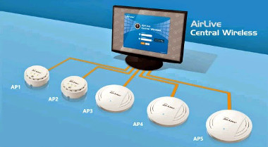

¿Qué son los servidores?
Un servidor es un tipo de sistema que proporciona servicios, recursos o datos a otros ordenadores, conocidos como clientes, a través de una red. Los servidores suelen estar diseñados para manejar múltiples solicitudes simultáneamente y suelen estar equipados con hardware y software especializados para gestionar estas tareas de manera eficiente.
Características clave de los servidores.
Robustez
Se refiere a su capacidad para operar de manera continua y fiable durante períodos prolongados. Esto implica que están construidos con componentes de alta calidad y diseñados para soportar condiciones de trabajo exigentes.
Capacidad de procesamiento
Los servidores suelen incorporar hardware potente, como procesadores de múltiples núcleos y una gran cantidad de memoria RAM, para manejar cargas de trabajo intensivas.
Redundancia
La redundancia es una característica crucial en el diseño de servidores, ya que minimiza el riesgo de fallos. Esto se logra mediante la inclusión de componentes duplicados, como fuentes de alimentación, discos duros y controladores.
Optimización para Redes
Los servidores están diseñados para gestionar redes y múltiples conexiones simultáneas de manera eficiente. Los sistemas operativos de servidor están optimizados para soportar una gran cantidad de usuarios y dispositivos conectados al mismo tiempo.
Protocolos de Comunicación
Los servidores implementan una variedad de protocolos de comunicación específicos para diferentes tipos de servicios. Por ejemplo, los servidores web utilizan HTTP y HTTPS para gestionar las solicitudes de páginas y asegurar la transferencia de datos.
Beneficios de los servidores
Acceso remoto
Acceso a los servicios y aplicaciones desde cualquier lugar con conexión.
Seguridad
Proporcionar una seguridad adicional a los datos y aplicaciones.
Gestión centralizada
Monitorea y controla recursos, datos y aplicaciones de manera centralizada.
Fiabilidad
Reduce el tiempo de inactividad y aumenta la productividad con una plataforma confiable.

Flexibilidad
Configura servidores para adaptarse a las necesidades específicas del negocio.

Copia y recuperación de datos
Protege datos y asegura la continuidad del negocio en caso de desastre.

Colaboración
Permite la colaboración y comunicación entre miembros del equipo, independientemente de la ubicación.

Ahorro de costos
Reduce costos al consolidar recursos, reducir costos de hardware y software, y mejorar la utilización de recursos.

Rendimiento mejorado
Mejora el rendimiento general del sistema y la respuesta con una plataforma de alto rendimiento.

Ejemplos
- Servidor de una empresa:
- Gestiona los correos electrónicos internos, el acceso a archivos compartidos y las aplicaciones empresariales.
- Servidor web de una tienda en línea:
- Asegura que los clientes puedan acceder al sitio web de la tienda y realizar compras.
- Servidor de una universidad:
- Administra las bases de datos de estudiantes, sistemas de aprendizaje en línea, y correos electrónicos institucionales.
.jpg)
.jpg)
.jpg)
.jpg)
.jpg)
.jpg)